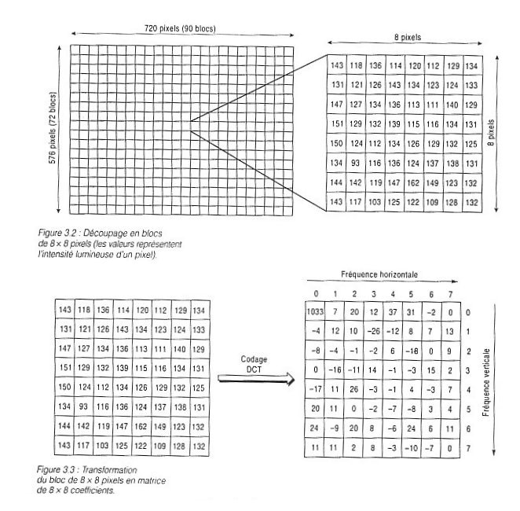
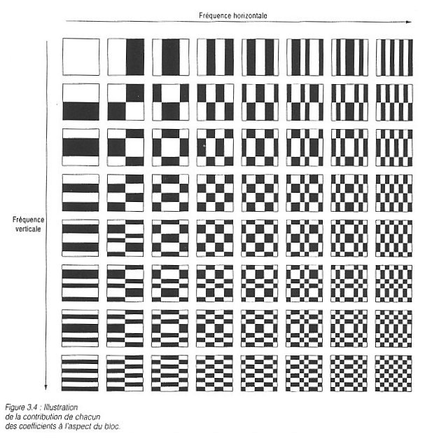
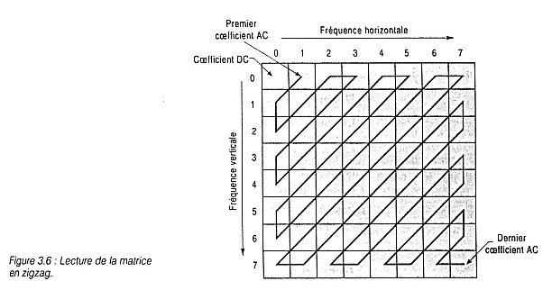
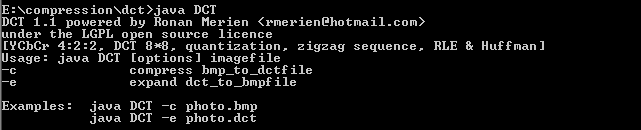

Référence :
La compression de données (Mark Nelson - Ed. Dunod).
Compression d'images de type JPEG :
Ce programme comprend un module de lecture/ecriture au formap BMP.
/*
Image Compression, DCT / IDCT
[YCbCr 4:2:2, DCT 8*8, quantization, DC differential, zigzag sequence, RLE & Huffman]
*/
// ----------------------------------------------------------------------------------------------------
/**
* forwardDCT
*
* DCT[i][j] = (1/sqrt(2N)) C(x) C(y) SUM(x,0,N-1) SUM(y,0,N-1) pixel[x][y] cos((i*pi*(2x+1))/2N) cos((j*pi*(2y+1))/2N)
* C(0) = 1/sqrt(2) & C(x) = 1 if x>0
*
* DCT = C * image * Ct
* where temp = image * Ct
* and DCT = C * temp
*
* input byte from -128 to +127
*/
public void forwardDCT(int[][] image, int[][] DCT)
{
int i, j, k;
for (i = 0; i < N; i++) {
for (j = 0; j < N; j++) {
temp[i][j] = 0.0;
for (k = 0; k < N; k++) temp[i][j] += image[i][k] * Ct[k][j];
}
}
double vtemp;
for (i = 0; i < N; i++) {
for (j = 0; j < N; j++) {
vtemp = 0.0;
for (k = 0; k < N; k++) vtemp += C[i][k] * temp[k][j];
DCT[i][j] = (int) Math.round(vtemp);
}
}
}
// ----------------------------------------------------------------------------------------------------
/**
* inverseDCT
*
* IDCT[x][y] = (1/sqrt(2N)) SUM(i,0,N-1) SUM(j,0,N-1) C(i) C(j) DCT[i][j] cos((i*pi*(2x+1))/2N) cos((j*pi*(2y+1))/2N)
* C(0) = 1/sqrt(2) & C(x) = 1 if x>0
*
* IDCT = Ct * DCT * C
* where temp = image * C
* and IDCT = Ct * temp
*
*/
public void inverseDCT(int[][] DCT, int[][] IDCT)
{
int i, j, k;
double vtemp;
for (i = 0; i < N; i++) {
for (j = 0; j < N; j++) {
temp[i][j] = 0.0;
for (k = 0; k < N; k++) temp[i][j] += DCT[i][k] * C[k][j];
}
}
for (i = 0; i < N; i++) {
for (j = 0; j < N; j++) {
vtemp = 0.0;
for (k = 0; k < N; k++) vtemp += Ct[i][k] * temp[k][j];
// output byte from -128 to +127
if (vtemp < -128) IDCT[i][j] = -128;
else if (vtemp > 127) IDCT[i][j] = 127;
else IDCT[i][j] = (int) Math.round(vtemp);
}
}
}
int row, col, i, j, k;
FileInputStream fis = new FileInputStream(inFile);
BinaryInputStream bis = new BinaryInputStream(new BufferedInputStream(fis));
FileOutputStream fos = new FileOutputStream(outFile);
BinaryOutputStream bos = new BinaryOutputStream(new BufferedOutputStream(fos));
// Reading the input BMP imagefile
int p;
// BitmapFileHeader (14 bytes)
if ((bis.readByte() != (byte) 'B') || (bis.readByte() != (byte) 'M'))
throw new Exception("Not a Bitmap file"); // header = 'BM' (2 bytes)
p = bis.readBit(32); // BMP file size (4 bytes)
p = bis.readBit(64); // Reserved & Offset (8 bytes)
// BitmapInfoHeader (40 bytes)
p = bis.readBit(32); // info header size = 40 (4 bytes)
COLS = bis.readBit(32); // width (4 bytes)
ROWS = bis.readBit(32); // height (4 bytes)
p = bis.readBit(16); // planes = 1 (2 bytes)
p = bis.readBit(16); // bitcount = 24 (2 bytes)
if (p != 24) throw new Exception("Not a 24bits Bitmap file");
p = bis.readBit(32); // compression = 0 (4 bytes)
p = bis.readBit(32); // image size (4 bytes)
p = bis.readBit(32); // parameters (4 bytes)
p = bis.readBit(32); // parameters (4 bytes)
p = bis.readBit(32); // parameters (4 bytes)
p = bis.readBit(32); // parameters (4 bytes)
bos.writeBit(COLS, 16);
bos.writeBit(ROWS, 16);
imageY = new int[ROWS][COLS];
imageCr = new int[ROWS][COLS];
imageCb = new int[ROWS][COLS];
initialyze();
int blue, green, red, y, cb, cr;
for (row = ROWS - 1; row >= 0; row--) {
for (col = 0; col < COLS; col++) {
blue = bis.readBit(8);
green = bis.readBit(8);
red = bis.readBit(8);
y = (int) (0.299 * red + 0.587 * green + 0.114 * blue);
cb = (int) (-0.1687 * red - 0.3313 * green + 0.5 * blue); // cb = (int) (0.564*(blue - y));
cr = (int) (0.5 * red - 0.41874 * green - 0.08130 * blue); // cr = (int) (0.713*(red - y));
imageY[row][col] = y - 128;
imageCr[row][col] = cr;
imageCb[row][col] = cb;
}
}
for (row = 0; row < ROWS; row += N) {
for (col = 0; col < COLS; col += N) {
for (i = 0; i < N; i++) {
for (j = 0; j < N; j++) {
inputY[i][j] = imageY[row + i][col + j];
}
}
forwardDCT(inputY, outputY);
for (k = 0; k < N * N; k++) {
i = zigzag(k).col;
j = zigzag(k).row;
outputY[i][j] = (int) Math.round(outputY[i][j] / quantumY[i][j]);
bos.writeBit(outputY[i][j] + 1024, 11);
}
}
}
for (row = 0; row < ROWS; row += 2 * N) {
for (col = 0; col < COLS; col += 2 * N) {
for (i = 0; i < N; i++) {
for (j = 0; j < N; j++) {
inputCr[i][j] = (int) ((imageCr[row + 2*i][col + 2*j]
+ imageCr[row + 2*i + 1][col + 2*j]
+ imageCr[row + 2*i][col + 2*j + 1]
+ imageCr[row + 2*i + 1][col + 2*j+ 1]) / 4);
inputCb[i][j] = (int) ((imageCb[row + 2*i][col + 2*j]
+ imageCb[row + 2*i + 1][col + 2*j]
+ imageCb[row + 2*i][col + 2*j + 1]
+ imageCb[row + 2*i + 1][col + 2*j + 1]) / 4);
}
}
forwardDCT(inputCr, outputCr);
forwardDCT(inputCb, outputCb);
for (k = 0; k < N * N; k++) {
i = zigzag(k).col;
j = zigzag(k).row;
outputCr[i][j] = (int) Math.round(outputCr[i][j] / quantumCrCb[i][j]);
bos.writeBit(outputCr[i][j] + 1024, 11);
}
for (k = 0; k < N * N; k++) {
i = zigzag(k).col;
j = zigzag(k).row;
outputCb[i][j] = (int) Math.round(outputCb[i][j] / quantumCrCb[i][j]);
bos.writeBit(outputCb[i][j] + 1024, 11);
}
}
}




Sources et code de DCT : dct.zip.